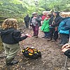
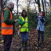
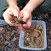
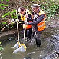
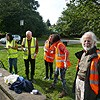

|
|
Water Quality Monitoring
Monitoring Water Quality in Gledhow Valley
Four combined sewer outlets (CSOs) discharge into Gledhow beck. Yorkshire Water are allowed to discharge into water courses such as Gledhow Beck when heavy rainfall threatens to overwhelm sewers and flood homes and businesses.
The latest Environment Agency figures for 2022 show that there were 163 discharges of raw sewage for a total of 211.7 hours from the CSOs into Gledhow Beck last year. Research suggests widespread under reporting of discharges and dry spills (discharges when there is no rain), so these figures are very likely underestimates of the true extent of pollution in the area.
Other sources of Beck pollution include incorrectly plumbed domestic appliances discharging into surface water drains and road run-off which contains toxic metals such as copper and zinc as well as spills of diesel and petrol.
Campaigning work by the Friends of Gledhow Valley Woods over the years has brought about some improvements. CSOs have been upgraded and misconnection tracing has resulted in reduced pollution from this source. However, the discharge of large volumes of raw sewage into Gledhow Beck continues on a regular basis. This has had a major impact on the ecology of the Beck, with only pollution-tolerant species able to survive in this environment.
Yorkshire Water's current investment plan (AMP7) which runs until 2025 only includes investigations to establish if one of the four CSOs impacts on Beck water quality and does not include plans for any upgrading work.
The Environment Agency are currently working on the post-2025 investment plan (AMP8) but there will be no publicly available information on the outcome of this until the end of 2024.
We have received a vague undertaking from the Environment Agency that they are talking with Yorkshire Water with a view to including the Gledhow CSOs in this investment plan.
With increasing public concern about the poor state of our rivers and becks, now is the right time to address the issue of beck water quality, the impact of Yorkshire Water's operations on the natural environment and the role and responsibilities of water regulators.
Although our "Citizens Science" project only got underway in September 2023 it is already beginning to raise awareness of water quality issues in the area and forms an important part of the Friends' work to improve and protect Gledhow Valley Woods for everyone.
Action as of January 2024
    
The ongoing results of our water monitoring can be seen on the Water Rangers web site:
"Polution in the Park" Film
Dave Sellers from the Oakwood Film Academy had produced a short film relating to local water quality monitoring, which can be seen on YouTube by following the link below:
If you have any questions or comments related to water pollution issues surrounding Gledhow Beck, Gledhow Lake or the Woods in general, please contact us and let us know.
|
|
 |
{kind=link}
{kind=link}
{kind=link}
{kind=link}
{kind=link}